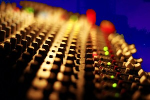

Soundboard
To put it simply, a soundboard is an audio device that takes multiple audio inputs (Such as a microphone or instrument) and merges them together so they can be sent as one signal. However, more complex soundboards are able to do more things like changing volume, adding effects to audio, playing pre-recorded sounds, etc.
A soundboard is something I've considered for a while now for two reasons. Memes and microphone volume, but mainly memes.